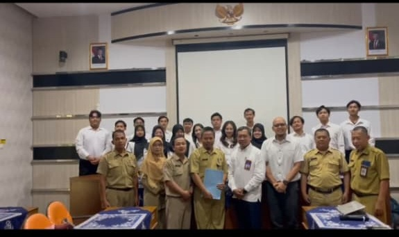
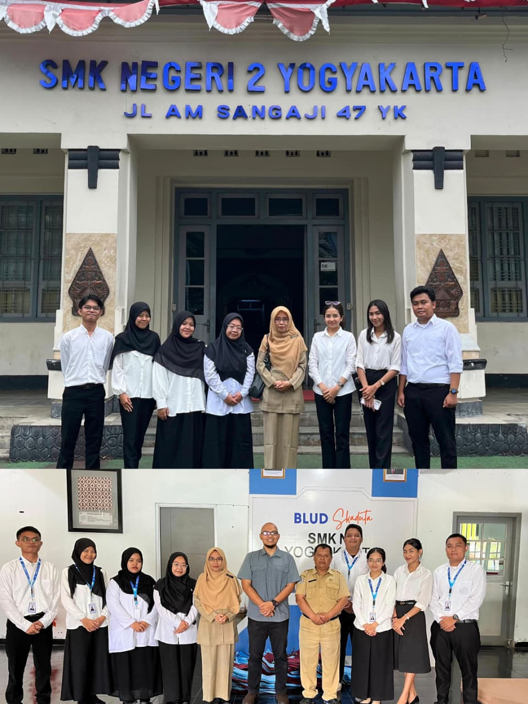
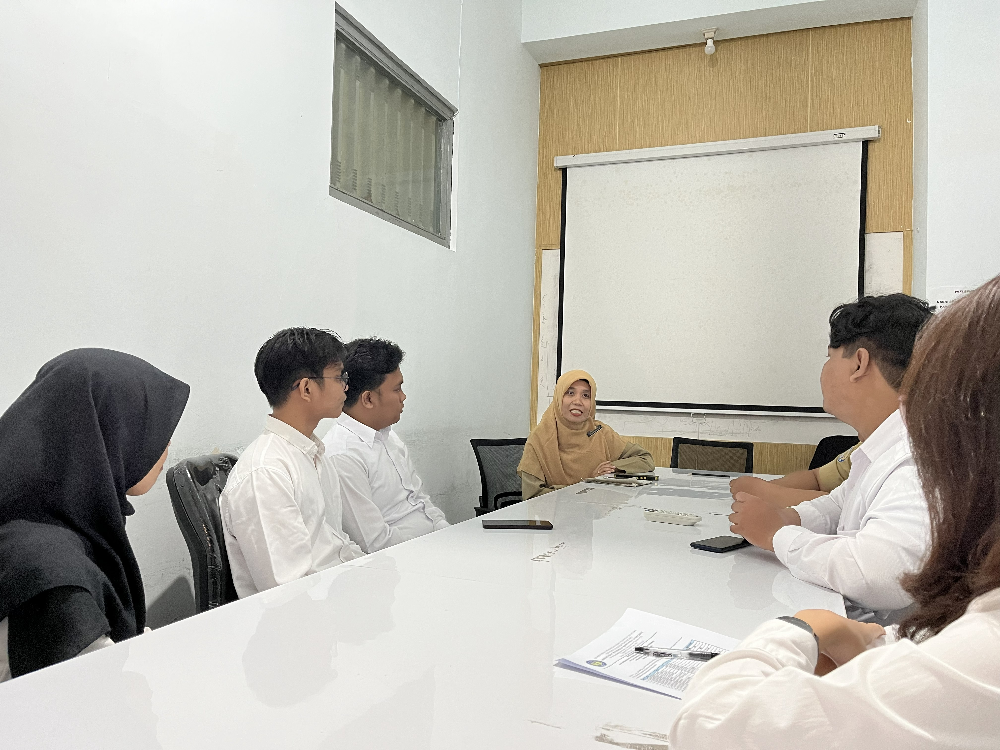

Selamat Datang di
E-Portofolio Saya.
"Menjadi guru bukan sekadar profesi, melainkan panggilan jiwa untuk mencerdaskan kehidupan bangsa. Saya berkomitmen untuk terus belajar, berinovasi, dan menginspirasi murid dalam dunia teknologi informasi."

Raferly Cahya Darna
Guru Informatika | Berasal dari Lampung
Mari Berjejaring & Berkolaborasi
Hubungi atau temukan saya melalui platform jejaring profesional dan media sosial di bawah ini. Mari saling berbagi inspirasi demi masa depan pendidikan Indonesia.

Latar Belakang Saya
Perkenalkan, nama saya Raferly Cahya Darna. Saya merupakan seorang lulusan sarjana program studi Sistem Informasi yang memiliki panggilan jiwa dan tekad kuat untuk mengabdikan diri di dunia pendidikan sebagai seorang guru.
Motivasi utama saya dalam menekuni profesi mulia ini adalah keinginan luhur untuk menyalurkan, menyebarluaskan, serta mengamalkan ilmu pengetahuan teknologi yang saya miliki agar senantiasa mendatangkan manfaat nyata bagi orang lain. Meskipun dasar akademis saya berasal dari rumpun keilmuan teknologi murni (non-kependidikan), hal tersebut justru memicu semangat saya untuk tiada henti belajar dan beradaptasi.
Melalui perjalanan program PPG ini, saya banyak bersentuhan dengan khazanah baru yang tidak pernah saya dapatkan selama perkuliahan S1 dahulu, khususnya pemahaman mendalam tentang teori pedagogi, manajemen sekolah, serta seni merancang iklim belajar yang bermakna bagi murid.
"Semua orang menjadi guru, semua rumah menjadi sekolah. Janganlah lelah belajar, sebab mendidik adalah seni menuntun kodrat anak agar selamat dan bahagia."
— Ki Hajar DewantaraKeahlian
Web Developer
Membangun dan mengembangkan website yang responsif dan modern menggunakan HTML, CSS, JavaScript, and framework modern.
IT Support & Jaringan
Memiliki pemahaman mendalam tentang instalasi, perangkat keras dan lunak, troubleshooting, serta konfigurasi jaringan komputer.
Pedagogi & TPACK
Mengintegrasikan teknologi, pedagogi, dan konten secara efektif untuk menciptakan pembelajaran inovatif dan relevan.
Keunikan Daerah Asal: Tanggamus, Lampung
Sebuah kabupaten elok di Provinsi Lampung yang dianugerahi keindahan alam vulkanis, kekayaan agraris, serta keteguhan adat budaya.
Gunung Tanggamus
Berdiri kokoh dengan lanskap yang megah, puncak Gunung Tanggamus menawarkan lukisan panorama alam yang sangat magis, memanjakan sejauh mata memandang khususnya di kala kabut fajar terbit maupun selimut senja merona.
 Hasil Bumi
Hasil Bumi
Kopi Robusta Tanggamus
Kesuburan tanah vulkanis di kaki jalur pegunungan Bukit Barisan menjadikan Tanggamus sebagai salah satu surga produsen biji kopi robusta terbesar dengan cita rasa khas yang mendunia and berkualitas tinggi di Lampung.
 Adat Budaya
Adat Budaya
Tradisi Adat Sai Batin
Masyarakat pesisir Tanggamus yang memegang teguh identitas Sai Batin terus merawat serta melestarikan warisan leluhur secara turun-temurun melalui pagelaran upacara adat, pakaian kebesaran, and tata krama kesantunan.
Empat Model Kompetensi Guru
Kompetensi yang harus dimiliki guru mencakup empat aspek utama yang saling terintegrasi dalam mendukung proses pembelajaran yang bermakna.
Kompetensi Pedagogik
Kemampuan dalam perencanaan, pelaksanaan, dan evaluasi pembelajaran yang efektif sesuai karakteristik murid.
Kompetensi Kepribadian
Memiliki kepribadian yang mantap, stabil, dewasa, arif, dan berwibawa serta menjadi teladan bagi siswa.
Kompetensi Sosial
Mampu berkomunikasi dan berinteraksi secara efektif dengan siswa, sesama pendidik, orang tua, dan lingkungan masyarakat.
Kompetensi Profesional
Menguasai materi pembelajaran secara luas and mendalam serta terus meningkatkan kualitas diri secara berkelanjutan.
Karakter Guru Profesional
Nilai-nilai karakter yang menjadi landasan dalam setiap langkah sebagai pendidik profesional.
Pengabdian, Jujur & Dedikasi
Mengabdi dengan sepenuh hati, menjunjung tinggi kejujuran, dan memiliki dedikasi dalam mendidik.
Inovatif & Adaptif Teknologi
Terus berinovasi dalam pembelajaran and adaptif terhadap perkembangan teknologi pendidikan.
Kolaboratif & Komunikatif
Mampu bekerja sama, terbuka terhadap masukan, dan berkomunikasi secara efektif dengan semua pihak.
Berpusat pada Siswa
Menempatkan kebutuhan dan perkembangan siswa sebagai prioritas utama dalam setiap keputusan.
Jejak Pendidikan & Pengalaman
S1 Sistem Informasi
Universitas Teknokrat Indonesia
Mempelajari arsitektur perangkat lunak, pemrograman, analisis basis data, dan struktur sistem informasi yang berdaya guna tinggi.
PPG Prajabatan | Calon Guru
Universitas Negeri Yogyakarta
Membentuk fondasi kompetensi pedagogik, merancang pembelajaran interaktif, serta menelaah psikologi kognitif murid secara utuh.
Praktik Pengalaman Lapangan (PPL)
SMK Negeri 2 Yogyakarta
Mengaplikasikan rancangan modul pembelajaran informatika di kelas X DPIB, mengelola dinamika kelas, serta berkolaborasi dengan guru pamong kompeten.
Dosen Pembimbing Lapangan
Dr. Ir. Satriyo Agung Dewanto, S.T., S.Pd.T., M.Pd., IPM., ASEAN Eng.
Universitas Negeri Yogyakarta
Guru Pamong
Lili Kartikawati, M. Kom.
SMK Negeri 2 Yogyakarta
Artefak PPL I Terbimbing
Portofolio administrasi pembelajaran, perangkat ajar, instrumen evaluasi, rekapitulasi performa siswa, serta penilaian kinerja mengajar selama siklus PPL.
Modul Ajar (RPP)
1 Sistem Komputer (Siklus 1)
Modul Ajar Informatika2 Profesi Bidang Informatika (Siklus 2)
Modul Ajar Informatika3 Jaringan Komputer dan Internet (Siklus 3)
Modul Ajar InformatikaMedia Pembelajaran
Lembar Kerja Murid (LKPD) dan Hasil Kerja Murid
Progres Pantauan Nilai Murid
Penilaian Guru Pamong
Mahasiswa perlu menambahkan penilaian dari guru pamong terkait dengan rancangan pembelajaran yang telah disusun dan praktik mengajar yang dilakukan selama 3 siklus.
Lampiran 7
Perangkat PembelajaranPenilaian Penyusunan Perangkat
Instrumen penilaian yang diberikan oleh Guru Pamong terhadap kualitas RPP/Modul Ajar, asesmen, dan LKPD yang telah disusun sebelum pelaksanaan praktik.
Buka Google DriveLampiran 8
Praktik MengajarPenilaian Praktik Mengajar
Instrumen evaluasi kinerja dan observasi langsung oleh Guru Pamong saat mahasiswa melaksanakan kegiatan belajar mengajar di dalam kelas selama 3 siklus berturut-turut.
Buka Google DriveRefleksi & Rencana Tindak Lanjut
Evaluasi kritis terhadap proses pembelajaran yang telah dilaksanakan guna merancang inovasi dan perbaikan di masa mendatang.
Refleksi Akhir PPL Terbimbing
Pengalaman Berharga
Selama mengikuti PPL Terbimbing di SMK Negeri 2 Yogyakarta, saya memperoleh banyak pengalaman berharga mengenai peran guru profesional, mulai dari tahap orientasi, observasi, asistensi, hingga praktik terbimbing. Saya belajar memahami manajemen sekolah, budaya kerja vokasi, karakteristik siswa, serta pentingnya menyelaraskan rancangan pembelajaran mulai dari tujuan, asesmen, hingga kebutuhan murid di kelas.
Tantangan & Solusi
Tantangan utama yang dihadapi adalah adanya murid yang kurang aktif, kurang percaya diri berpendapat, serta keterbatasan sarana praktik yang belum sepenuhnya optimal. Saya berupaya mengatasi hal ini dengan menerapkan pertanyaan pemantik yang merangsang keaktifan, menyelenggarakan diskusi kelompok kolaboratif, memberikan pendampingan personal, serta memanfaatkan perangkat yang tersedia seefektif mungkin.
Umpan Balik & Perbaikan
Melalui refleksi bersama DPL and Guru Pamong, saya mendapatkan masukan penting untuk meningkatkan kompetensi pedagogik dan profesional saya. Beberapa rekomendasi utama meliputi penyusunan tujuan pembelajaran terukur dengan pendekatan ABCD, jaminan keselarasan materi-asesmen, pembuatan rubrik penilaian yang lebih detail, serta penerapan metode *deep learning* untuk mengasah berpikir kritis siswa.
Inovasi Pembelajaran Informatika
Sesuai dengan hasil evaluasi pada Lembar Kerja PPL, saya menemukan bahwa pembelajaran teori semata kurang efektif. Oleh karena itu, saya berkomitmen untuk melakukan perubahan metode pembelajaran menjadi lebih kreatif dan inovatif agar murid lebih aktif.
Selain itu, mengintegrasikan kegiatan kuis atau games interaktif sangat penting untuk meningkatkan motivasi dan partisipasi murid. Dengan pendekatan ini, kelas Informatika di SMKN 2 Yogyakarta menjadi tempat yang menyenangkan dan mendorong pemahaman mendalam.
Dokumentasi Kegiatan
Galeri dokumentasi perjalanan dan aktivitas praktik mengajar terbimbing (PPL) di SMKN 2 Yogyakarta.

Penerjunan Mahasiswa PPL
Proses penerimaan dan penyambutan mahasiswa PPG oleh manajemen sekolah SMKN 2 Yogyakarta sebagai tanda dimulainya program praktik kerja lapangan.

Penerjunan Mahasiswa PPL
Proses penerimaan dan penyambutan mahasiswa PPG oleh manajemen sekolah SMKN 2 Yogyakarta sebagai tanda dimulainya program praktik kerja lapangan.

Penerjunan Mahasiswa PPL
Proses penerimaan dan penyambutan mahasiswa PPG oleh manajemen sekolah SMKN 2 Yogyakarta sebagai tanda dimulainya program praktik kerja lapangan.